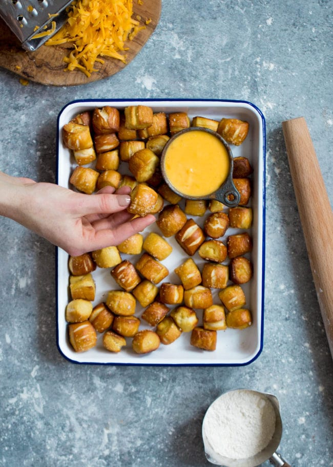

Delicious Pretzel Bites!

These pretzels will have you wanting more
Ingredients
- 1 1/2 cups warm water
- 2 tablespoons light brown sugar
- 1 package active dry 2 ¼ teaspoons
- 3 ounces unsalted butter melted
- 2 1/2 teaspoons kosher salt
- 4 ½ to 5 cups all-purpose flour
- Vegetable oil
- 3 quarts water
- 1/3 cup baking soda for boiling the pretzels
- 1 whole egg
- Coarse sea salt
Directions
- For the Pretzels: Combine the 1 ½ cups water, sugar, yeast, and butter in the bowl of a stand mixer and mix with the dough hook until combined. Let sit for 5 minutes.
- Add the salt and flour and mix on low speed until combined. Increase the speed to medium and continue kneading until the dough is smooth and begins to pull away from the side of the bowl, about 3 to 4 minutes.
- If the dough appears too wet, add additional flour, 1 tablespoon at a time. Remove the dough from the bowl, place on a flat surface and knead into a ball with your hands.
- Oil a bowl with vegetable oil, add the dough and turn to coat with the oil. Cover with a clean towel or plastic wrap and place in a warm spot until the dough doubles in size, about 1 hour.
- Preheat the oven to 425 degrees F.
- Bring the 3 quarts of water to a boil in a small roasting pan over high heat and carefully add the baking soda. It will boil over, so add slowly and be careful!
- Remove the dough from the bowl and place on a flat surface. Divide the dough into 8 equal pieces, about 4 ¼ to 4 ½ ounces each. Roll each piece into a long rope measuring 22 inches and shape. Cut the dough into one inch pieces to make the pretzel bites.
- Boil the pretzel bites in the water solution in batches. We did about 15 bites at a time. Boil for about 30 seconds. Remove with a large slotted spoon. Place pretzel bites on a baking sheet that has been sprayed with cooking spray. Make sure they are not touching.
- Brush the tops with the egg wash and season liberally with the salt. Place into the oven and bake for 15 to 18 minutes until golden brown.
- Remove to a baking rack and let rest 5 minutes before eating.
Home
Source for recipe